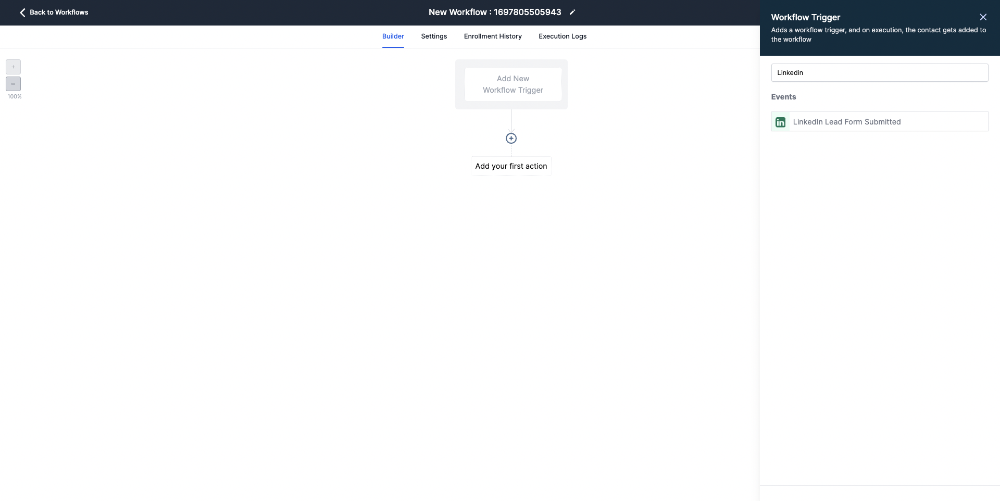
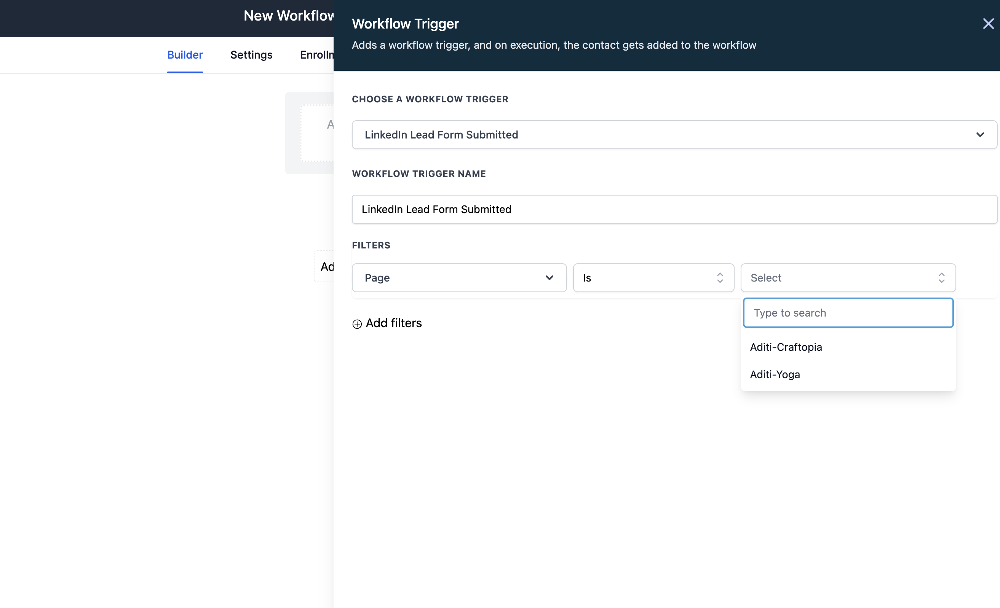
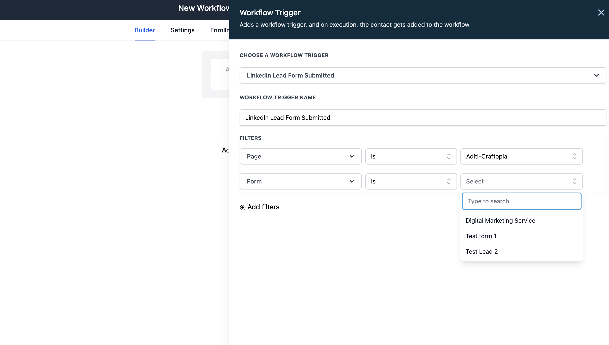
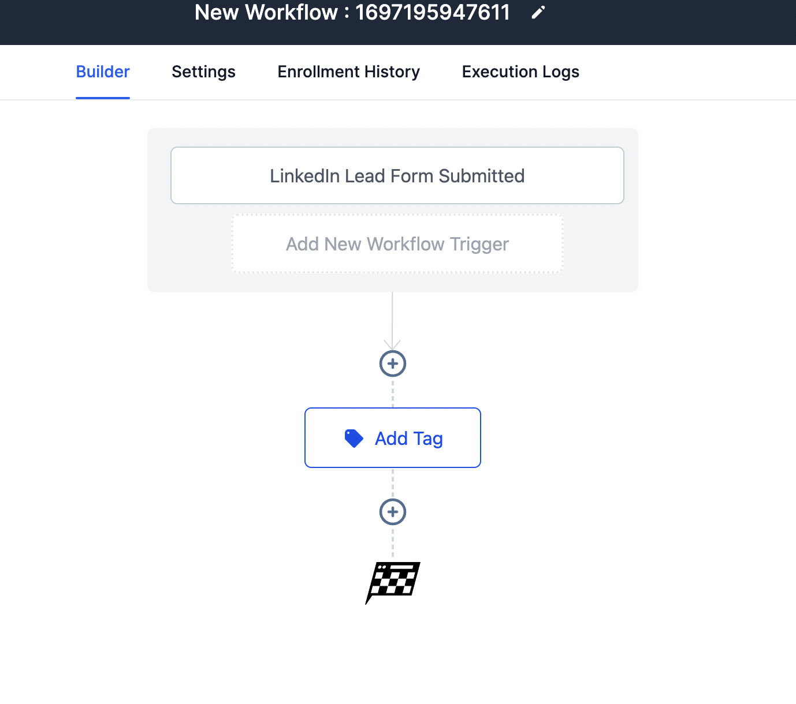

In this guide, we will walk you through how to set up workflow automation for your LinkedIn lead ads integration.
Pre-requisite
Please connect your Linkedin account with the CRM. To know more about how to connect Linkedin with the CRM, click here
Add Workflow Trigger
- Go to "Automation" on the left menu and click on "Create Workflow."
- Click on "Add a new trigger" and select the "LinkedIn lead form submitted" trigger.

- Use filters to select a page/ad account (if you've added multiple ad accounts to the subaccount). If you can't see any ad accounts in the dropdown, ensure your LinkedIn account is integrated with the sub-account.

- Use filters to select a specific form. Ensure that field mapping is completed for the chosen form; otherwise, the leads won't be fetched into the CRM.

- After setting the triggers, define the set of actions for the automation and save.

- Once the automation setup is complete, publish the workflow to activate it.